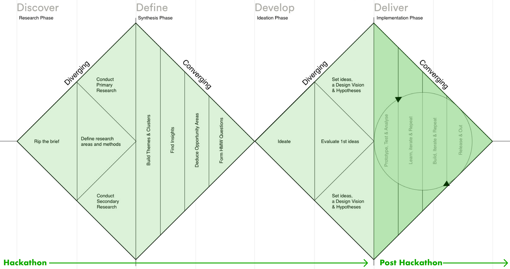
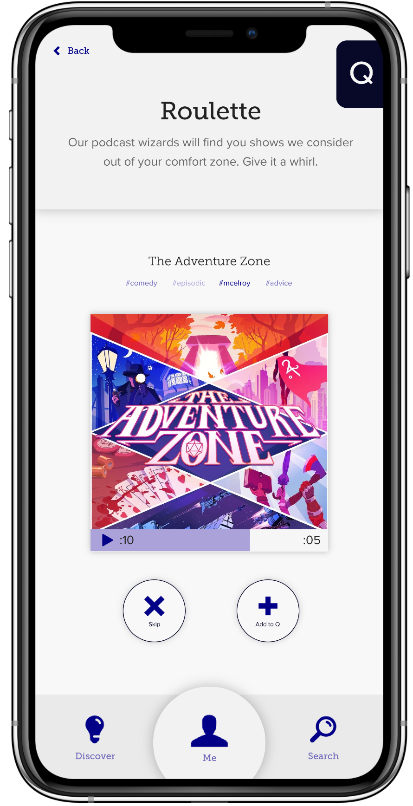
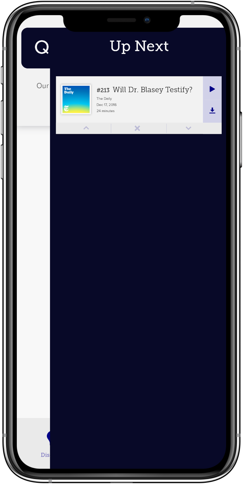
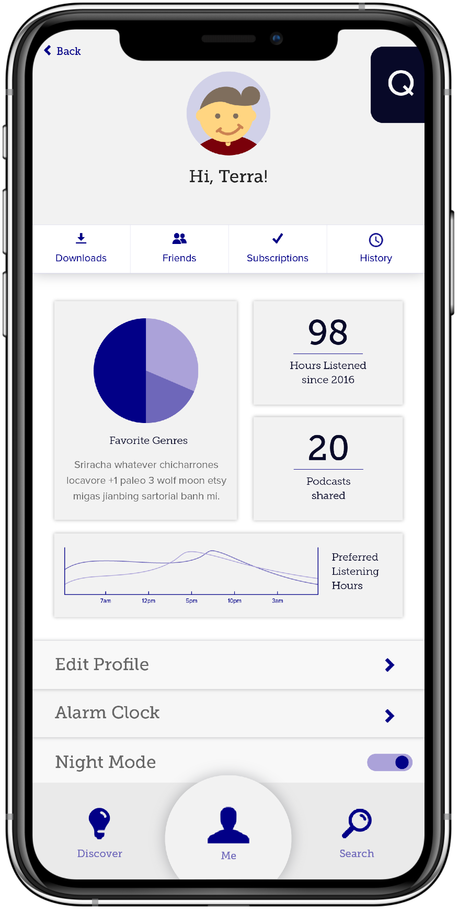
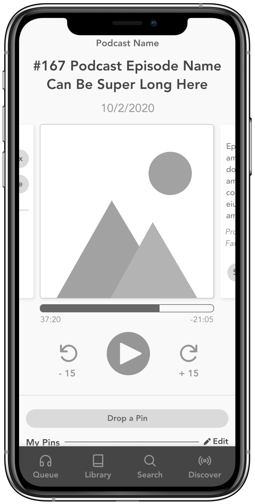
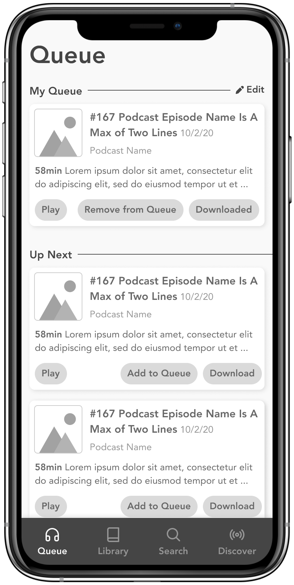
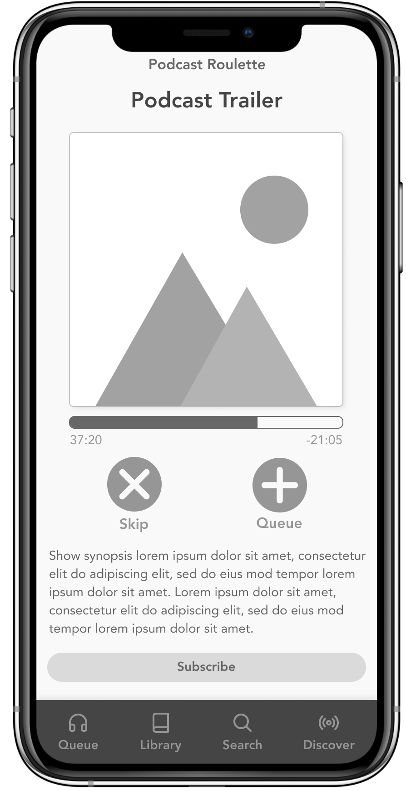
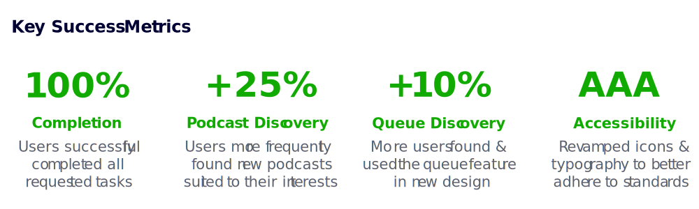

Hackathon: Podcast App
During a 24-hour hackathon, I used design thinking principles to design an app dedicated to providing the best listening experience possible to podcast fans.
TLDR: I researched, ideated, tested, iterated, retested, and refined a complete podcast listening experience with a partner designer.
- Role: Product Designer
- Software Used: Figma, Illustrator
- 100% task completion
- +25% new podcast discovery

The Process
In a whirlwind 24 hours, I lead my team through a little more than half of the double diamond. After presenting the first round of mock ups at the hackathon, I continued to iterate the designs on my own.

One of the goals of this project was to better understand the double diamond UX process, and to see how much of this method could be applied to Capterra's product team. Following the "Discover, Define, Develop, Deliver" framework helps designers focus on solving user needs without getting locked into one solution - a mentality that works well in an Agile environment.
Research & Insights
We surveyed 14 podcast listeners to learn more about their listening habits, prefered apps, and favorite features. We performed a competitor analysis, and organized the results into themes and patterns.


Primary research (competitive analysis) helped my team create a plan for our secondary research (user interviews). Of the themes we found, we focused on the 5 most impactful to inform wireframe designs:
"The taxonomy of podcast apps makes it difficult to know where to start."
"Which podcast will automatically play next is unclear and confusing."
"It's difficult to discover new podcasts outside of my go-to genres and producers."
"It takes too much time to figure out if a podcast is interesting enough to subscribe."
"A full list of my downloaded podcasts is difficult, or impossible, to find."
Prototyping & User Testing
We created a paper prototype that addressed user problems and presented the design to 10 users. We had them complete a series of tasks, documented their experiences, and prioritized the issues they found.
For each of the 5 user problems we identified, we ideated possible causes and solutions. For example:
1
User Problem
"Which podcast will automatically play next is unclear and confusing."
2
Hypothesis
We believe providing users with transparency into the podcast lineup will increase engagement.
3
Solution
Allow users to create a queue, adjust the lineup, and remove podcasts from up next.

Round One Mock Ups
We took the learnings from user testing and developed high fidelity mockups. We focused on improving hierarchy, eliminating UI issues, and creating a fresh color palette and style guide.



We asked 10 users to complete a series of tasks and documented their successes and failures. Because the UI issues were ironed out in wireframing, this round of testing focused primarily on feature discovery and adoption.
Successes
Queue feature was appreciated, exciting, and easy to use. The "Up Next" language is clear.
"Podcast Trailer" concept quickly understood and easily discoverable. 100% of users say they would use this feature.
Users had positive feedback on the Roulette feature, and say they would use it when "bored" with subscriptions.
Failures
Queue feature was not easily discoverable, and didn't show what happened after the manual queue.
Personal data in the "Me" tab is lower priority than the Queue and other tabs.
Users don't think to look in the "Discover" tab for subscriptions and downloads.
Round Two Wireframes
After the hackathon was over, I took the findings from our mockup testing and iterated on the design. I stripped back the aesthetics and refocused on taxonomy and prioritizing user needs.



Hypothesis: I believe making the Queue easier to find will increase engagement.
I moved the Queue feature to its own tab in the navigation. Giving the Queue its own page (rather than a drawer) allows for clearer headers and page sections. It also makes the feature harder to miss.
Hypothesis: I believe surfacing a user's podcast data will improve taxonomy.
I created a "Library" tab to house a user's partially played podcasts, subscriptions, downloaded episodes, listening history, and any other user-specific podcast data. This creates a clear separation between "my" data and "new" data.
Hypothesis: I believe increasing the visual weight of the Roulette feature will make it more discoverable.
I kept the Roulette feature at the top of the Discovery page, but added visual weight with a drop shadow, button and improved text hierarchy. This allows the feature to be more understood by new users.
Key Learnings & Next Steps
Following design thinking principles allowed me to think critically about the role research and iteration plays in the product development process. Positive user feedback has inspired me to continue iterating on this idea.

Initial findings have been overwhelmingly positive. Each progressive iteration has solved more problems than it has created (a good sign). I am excited to start polishing the UI interactions, and finalizing the architecture and site map.
Next steps include:
1
Perform another round of user testing with updated wireframes
2
Develop an updated palette of colors, typography, and other branding elements
3
Validate new features, like "Pin Dropping", with real users
4
Perform more competitor analysis to see how this project can further differentiate itself
Next Case Study 
Software Product Directory
Mobile Comparison Table
Developed with Love by Amelia Peacock 2020